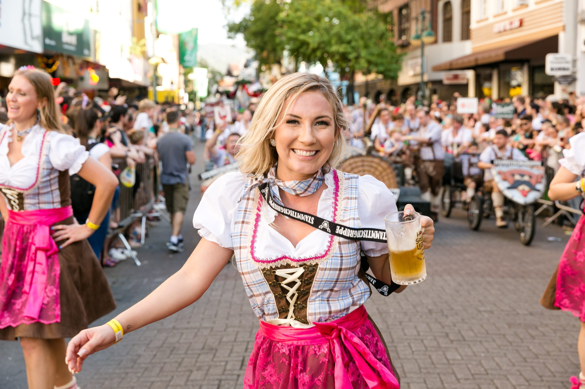

|  |
Os Desfiles são praticamente uma Oktoberfest de rua, durante a Oktoberfest Blumenau. É quando a festa sai dos pavilhões do Parque Vila Germânica e invade a tradicional Rua XV de Novembro, sempre regada a muita alegria, música, dança e é claro, muito chope gelado.
É a maior representação da cultura germânica de Blumenau. Ali participam clubes, grupos folclóricos, bandas, alegorias e grupos de amigos e turistas. Da escolha do traje ao momento da concentração, as emoções se afloram. Desfilar na Oktobrfest Blumenau é se tornar parte da história da festa. Quem desfila tem a oportunidade de transmitir e receber alegria numa troca intensa com o público que assiste.
Todos os anos mais de três mil pessoas atravessam a Rua XV de Novembro com seus trajes típicos, celebrando a cultura germânica e exalando felicidade.
Você quer fazer parte dessa história? Então fique atento que em breve anunciaremos as datas e como se inscrever!
|